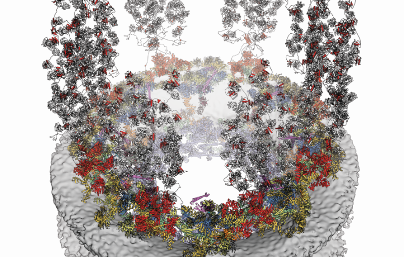

Research Interests
How are FG-nucleoporins arranged inside a single nuclear pore, and does that arrangement matter for transport? I am starting with fixation and imaging — building a reliable foundation for nanoscale structural questions.
Go to Research